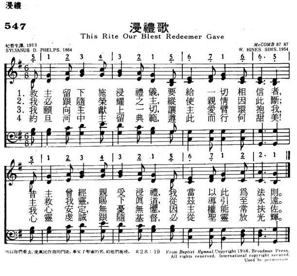

|
|
|
|
1 This rite our blest Redeemer gave Chorus: 2 For me the cross and shame to bear, 3 Jesus to thee we yield our all;
|
547浸礼歌
1.救主留下施浸礼仪，要给一切相信者，
昔主曾经，亲受浸礼，我当以此为法则。 2.我必跟随荣耀之主，纵使亲情因此断， 主救我灵，赐下真道，从兹导引至永远。 3.我愿向主献上一切，让主爱臂环抱我， 我心安定，无忧无惧，因主权能常扶佐。 4.约旦河中主留典范，遵此而行何甜美！ 心灵虔诚，跟随基督，必从圣灵放光辉。 |
|
https://www.mred365.cn/szxg/7550.html
 |
|
|
|
|

| Text: | This Rite Our Blest Redeemer Gave |
| Author: | Sylvanus D. Phelps, 1816-1895 |
| Tune: | McCOMB |
| Composer: | W. Hines Sims, 1907- |
| Short Name: | S. Dryden Phelps |
| Full Name: | Phelps, S. Dryden (Sylvanus Dryden), 1816-1895 |
| Birth Year: | 1816 |
| Death Year: | 1895 |
Phelps, Sylvanus
Dryden, D.D., was born at Suffield, Connecticut, May 15, 1816, and
educated at Brown University, where he graduated in 1844. In 1846 he became
pastor of the first Baptist Church, New Haven. Dr. Phelps is the Editor of The
Christian Secretary, Hartford. His publications include, Eloquence
of Nature, and Other Poems, 1842; Sunlight and
Hearthlight, 1856; the Poet's Song, 1867, &c. He
is the author of the following hymns:—
1. Christ, Who came my soul to save. Holy
Baptism.
2. Did Jesus weep for me? Lent.
3. Saviour, Thy dying love. Passiontide.
4. Sons of day, arise from slumber. Home
Missions.
5. This rite our blest Redeemer gave. Holy
Baptism.
Of these Nos. 1 and 4 appeared in the Baptist ed. of the Plymouth
Collection, 1857; Nos. 2 and 5 in the Baptist Devotional
Hymn Book, 1864; and No. 3 in Gospel Hymns, 1st
series, and Laudes Domini, 1884. [Rev. F. M. Bird,
M.A.]
-- John Julian, Dictionary of Hymnology (1907)
====================
Phelps, Sylvanus Dryden,

p. 893, ii. Additional hymns in common use by Dr. Phelps include (1) "Father, from Thy throne above" (Temperance); (2) "When over our land hung oppression's dark pall" (Temperance), both written in 1841. To J. Aldrich's Sacred Lyre, 1858, he contributed (3) "Sweet is the hour of prayer" (Prayer); (4) "Sweet Sunday-school! I love the place" (Sunday Schools); and (5) "Come friends, and let our hearts awake" (Divine Worship). There are also (6) "Once I heard a sound at my heart's dark door" (Voice of God within), in Pure Gold, with a refrain by Dr. Lowry; (7) "While on life's stormy sea" (Trust in God), written in 1862; and (8) "Come, trembling soul, be not afraid" (Confidence), "written after visiting a sick man, who, feeling his need of Christ, found it difficult to believe." Concerning his popular hymn "Saviour! Thy dying love," Burrage says it was written in 1862, and published in the Watchman and Reflector, and then, with music by Dr. R. Lowry in Pure Gold. It has been translated into Swedish and other languages. Burrage gives a revised version of the text, recently made by the author. (Burrage's Baptist Hymn Writers, 1888, p. 384.)
--John Julian, Dictionary of Hymnology, Appendix, Part II (1907)
Tune Information
| Title: | McCOMB |
| Composer: | Walter Hines Sims |
| Meter: | 8.7.8.7 |
| Incipit: | 51234 32156 71665 |
| Key: | G Major |
| Copyright: | Copyright 1956, Broadman Press |
| Short Name: | W. Hines Sims |
| Full Name: | Sims, W. Hines, 1907-1997 |
| Birth Year: | 1907 |
| Death Year: | 1997 |
Walter Hines Sims
Biography
Sylvanus was the son of Israel and Mercy Phelps, husband of Sophia Emelia Linsley, and father of Arthur Phelps.
He attended the Connecticut Literary Institute; Brown University, Providence, Rhode Island (graduated 1844); and Yale Divinity School, New Haven, Connecticut.
After ordination, he pastored at the First Baptist Church in New Haven (1854–82), and the Jefferson Street Baptist Church, Providence, Rhode Island (1876)
Later, he became editor of The Christian Secretary. His son was preacher, author and professor William Lyons Phelps.
Works
- Eloquence of Nature, and Other Poems (Hartford, Connecticut: Gurdon Robbins, 1842)
- The Holy Land, with Glimpses of Europe and Egypt (New York and Boston, Massachusetts: Sheldon and Gould & Lincoln, 1862)
- The Poet`s Song, (New York: Sheldon, 1867)
- Preface to The Poems of Elizabeth G. Barber Barrett (New York and Boston, Massachusetts: Hurd & Houghton and E. P. Dutton, 1866)
http://www.hymntime.com/tch/bio/p/h/e/l/phelps_sd.htm